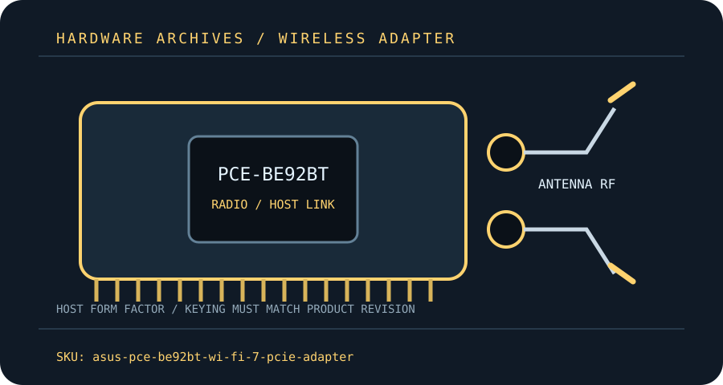

[ MODEL-SPECIFIC M.2 / PCIE WI-FI HARDWARE ]
ASUS PCE-BE92BT BE9300 Wi-Fi 7 PCIe Adapter
A tri-band Wi-Fi 7 desktop adapter with a remote antenna base and Bluetooth 5.4.
IDENTIFICATION: Match the full model, hardware revision, regulatory region and radio-module label before ordering replacements or selecting drivers. Values are manufacturer specifications, not a guaranteed measurement.

Dedicated wireless specifications
| Cataloged product | ASUS PCE-BE92BT BE9300 Wi-Fi 7 PCIe Adapter |
|---|---|
| Chipset / radio module | ASUS does not publish a silicon part number on the public spec page; Wi-Fi 7 radio chipset identity is therefore unconfirmed here. Do not select a driver based on an assumed module. |
| Wi-Fi generation / standards | Wi-Fi 7 / IEEE 802.11be with backward-compatible 802.11ax/ac/n/g/b/a modes. |
| Radio bands, channels & width | 2.4 GHz, 5 GHz and 6 GHz tri-band; 320 MHz operation is limited to the 6 GHz band and is subject to country rules. |
| Spatial streams / nominal link rates | 2×2 MIMO; ASUS advertises up to 688 Mb/s at 2.4 GHz, 2,882 Mb/s at 5 GHz and 5,764 Mb/s at 6 GHz as theoretical band rates. |
| Host interface / form factor / keying | PCI Express x1 host adapter (fits a compatible longer PCIe slot); motherboard USB 2.0 header connection is required for Bluetooth. |
| Antenna connectors | Two external antenna leads connect through the supplied magnetic base; use the supplied RP-SMA antenna connections and avoid forcing mismatched threads. |
| Bluetooth | Bluetooth 5.4; connect included internal USB lead to a compatible motherboard USB 2.0 header and install Bluetooth drivers. |
| Operating-system / driver compatibility | ASUS lists Windows 11 and Windows 10 64-bit drivers; its support page says 6 GHz needs Windows 11 and Windows 10 has limited functionality. No native macOS support is claimed. |
| Regulatory and host caveats | A free PCIe x1 electrical/physical slot and USB 2.0 header are both needed for the listed functions. Wi-Fi 7 features require a compatible router and driver; 320 MHz/6 GHz channels depend on local regulation and indoor/outdoor restrictions. Motherboard antenna placement and case obstruction affect reception. |
Model-specific installation notes
Install only with the host powered down and follow the manufacturer’s manual for slot, cable, antenna and ESD precautions. Fit and electrical compatibility are separate questions: the host must support the stated interface, firmware and driver for this exact SKU.
Nominal PHY rates vary with channel width, modulation, signal quality, regulatory domain, AP capabilities and concurrent client traffic. They are not measured Internet or application throughput. Confirm local 6 GHz/5 GHz channel permissions before deployment.
Manufacturer sources
- ASUS PCE-BE92BT technical specificationsASUS model specification page for Wi-Fi rates, Bluetooth and host support.
- ASUS PCE-BE92BT manuals and downloadsASUS model support/manual area; select the local region and product revision.
Source pages can be regional or revision-specific. Use the exact manufacturer page and package matching the label on the adapter and host.